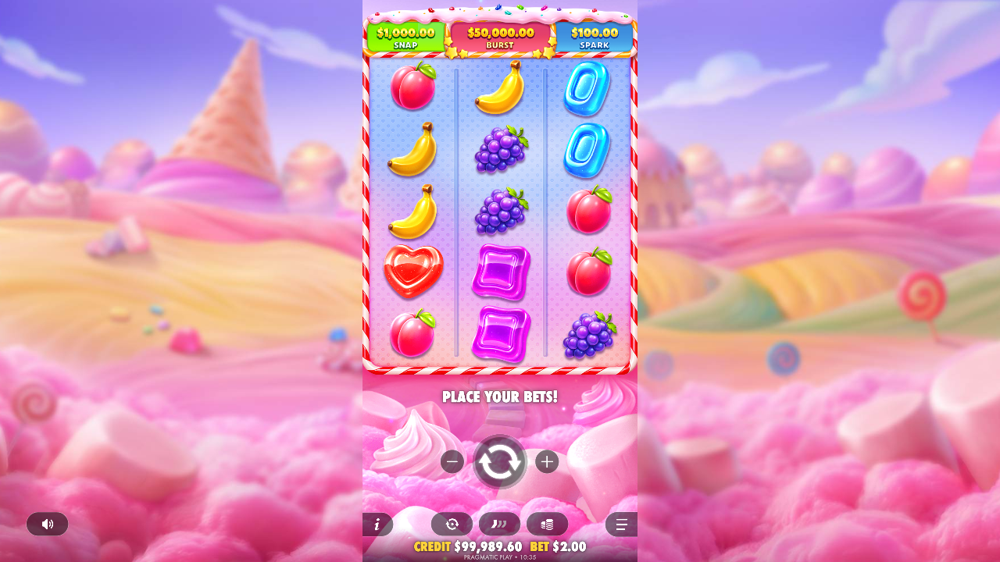
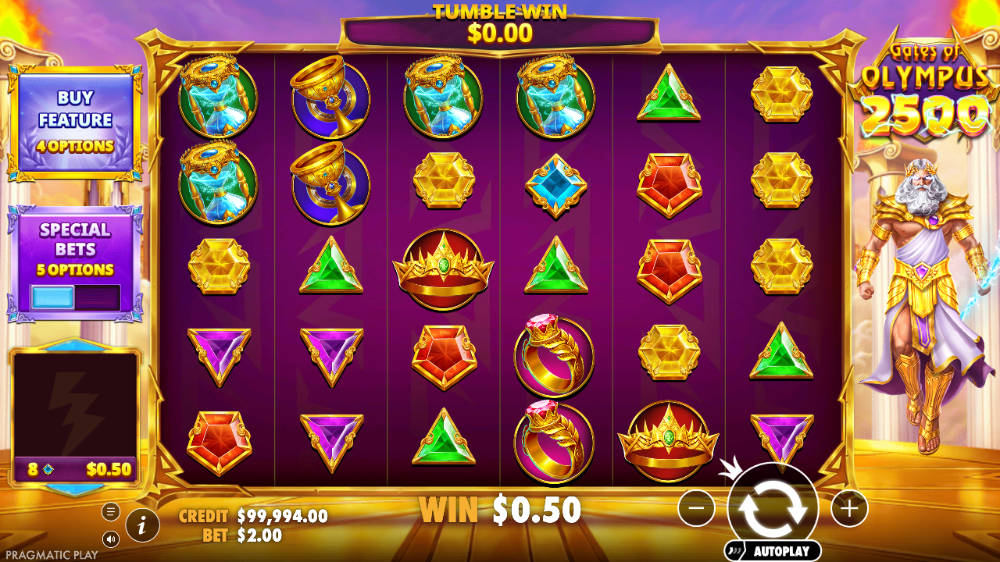
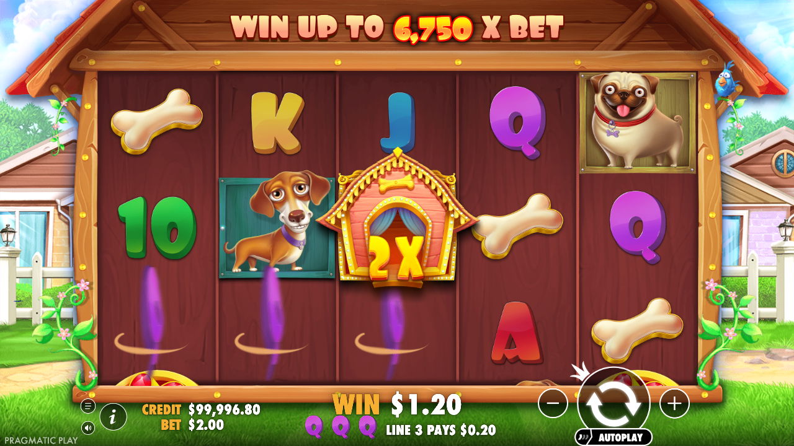
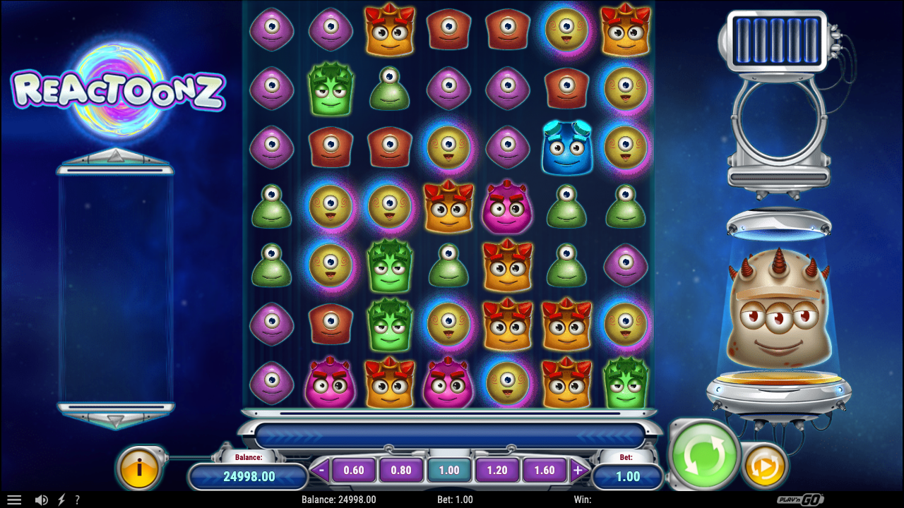
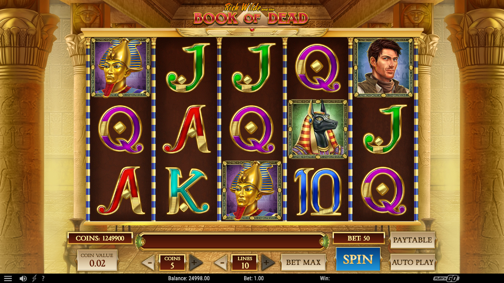
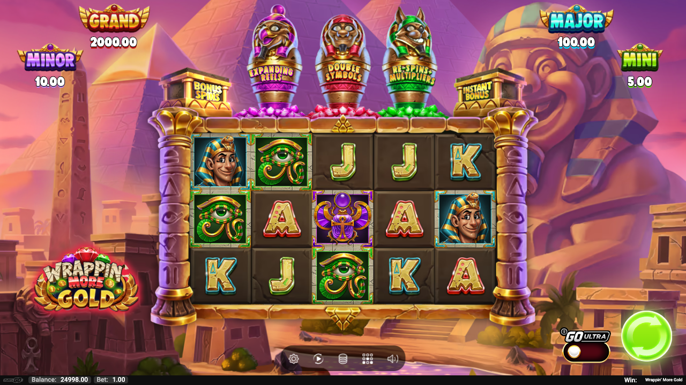
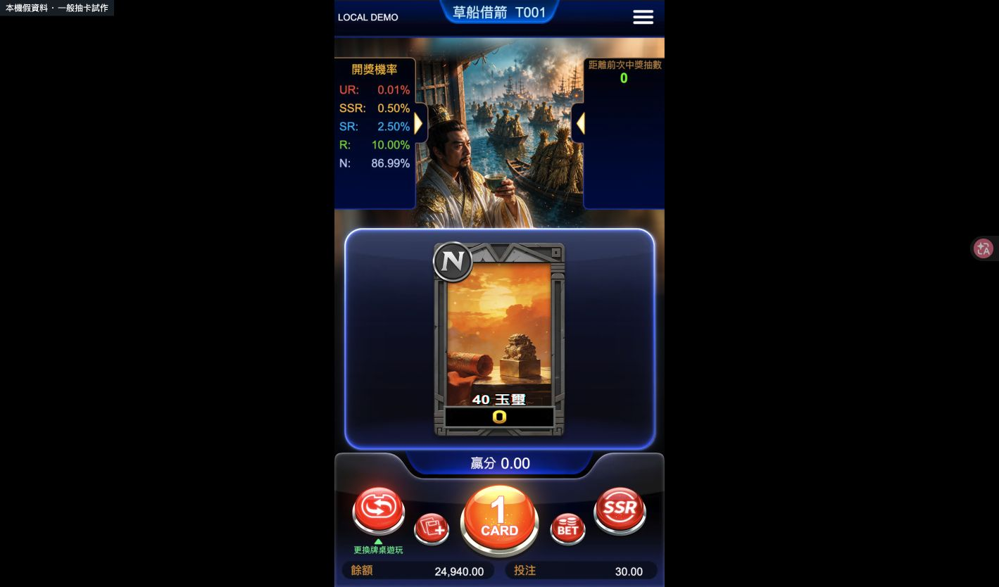
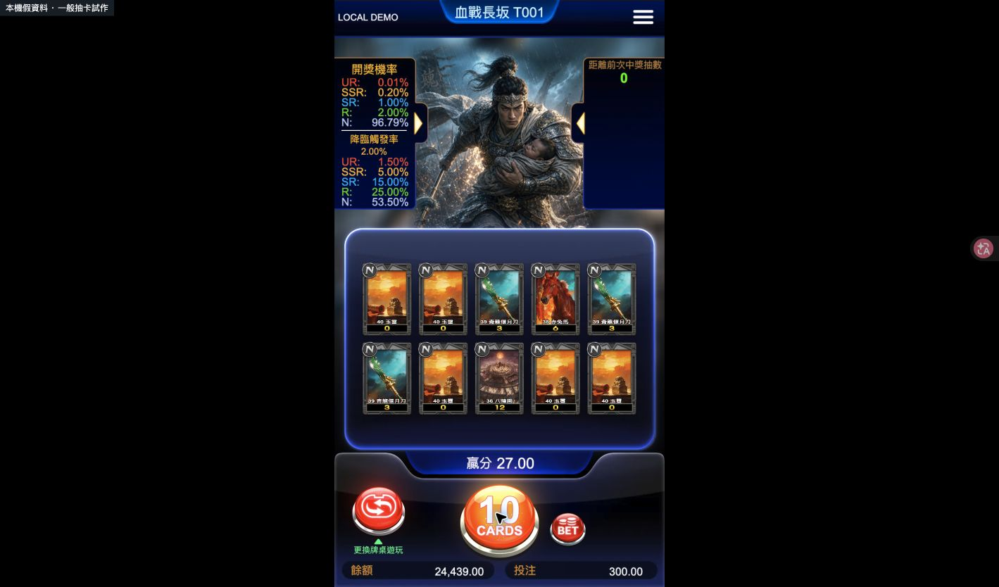
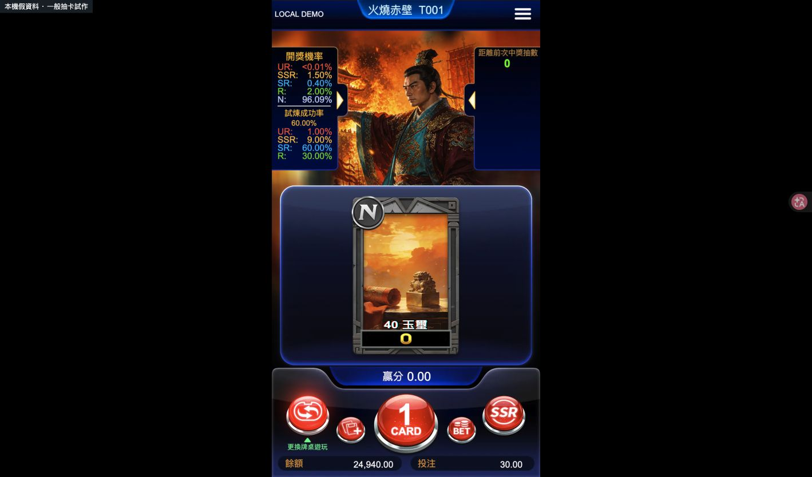
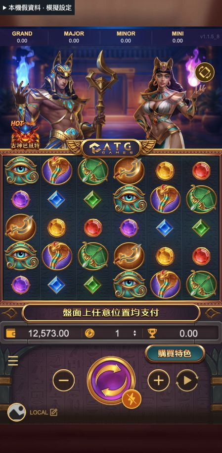

提供已驗證可操作的本機試作。各款玩法限制請見卡片與研究紀錄；能操作一般回合不代表完整玩法已還原。
請先下載專案，執行 python3 start-local.py，再使用下方本機遊戲連結。這個公開網頁僅提供選單與截圖。
python3 start-local.py

可在本機試玩






可在本機一般抽卡



本機假後端：一般／自動回合、免費與覺醒樣本；可調中獎機率，非原站數學模型